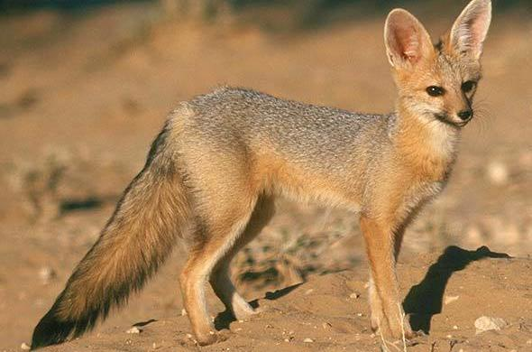

The Cape fox is one of the least spread out fox species in the world, being native to only southern Africa. It lives in South Africa, Namibia, Angola, and Botswana.
The Cape fox's diet consists of rodents, hares, spiders, insects, birds and eggs, reptiles, and wild berries. They are opportunistic hunters, which means that they stalk their prey for a while before waiting for the perfect time to attack. They also store their uneaten food for later consumption. They are also crepuscular, so they usually hunt and forage in dawn and dusk.
The Fox is fossorial, which means they live primarily in underground burrows and caves. Some other names for the Cape fox include: asse, cama fox, and silver-backed fox.

Video by Tony Camacho from Science Photo Library
Photo by unknown from unknown